This report presents a comprehensive analysis of Amazon's product data across multiple categories, including bestsellers, trending products, and new releases.
Price Segmentation: Our analysis identified 2 distinct price segments in the marketplace, allowing for targeted positioning strategies.
Price-Rating Relationship: Negative correlation between price and product ratings (r = -0.15), suggesting price is not strongly associated with customer satisfaction.
Category Insights: Significant variations in pricing strategies, customer reviews, and competitive dynamics across different product categories.
Prime Status Impact: Prime status shows significant impact on product positioning and performance.
This analysis provides valuable insights for strategic decision-making, pricing optimization, and competitive positioning in the Amazon marketplace.
The analysis is based on a comprehensive dataset of Amazon products scraped from various sections of the platform:
The data analysis followed a structured methodology:
Converting data types and handling missing values
Exploratory Data Analysis:
Visual pattern identification
Deep Analysis:
Cross-category trend analysis
Visualization and Reporting:
This analysis has several limitations that should be considered when interpreting the results:
Despite these limitations, the methodology provides robust insights into Amazon's product landscape and competitive dynamics.
The analysis covers a diverse range of product categories on Amazon, providing a comprehensive view of the marketplace.
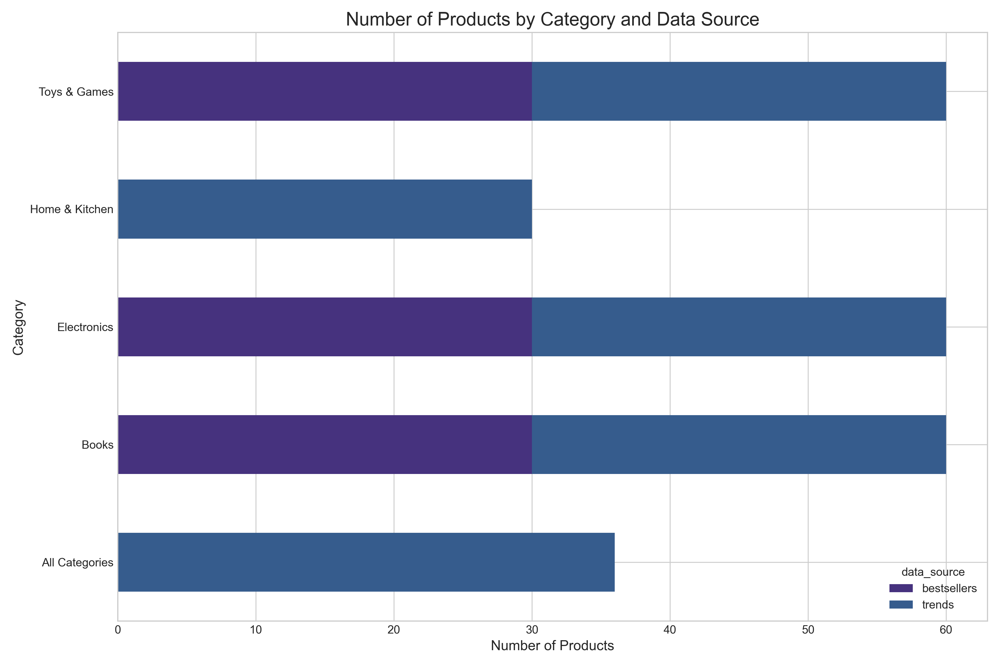
The pie chart below illustrates the relative proportion of products across different categories in our dataset:
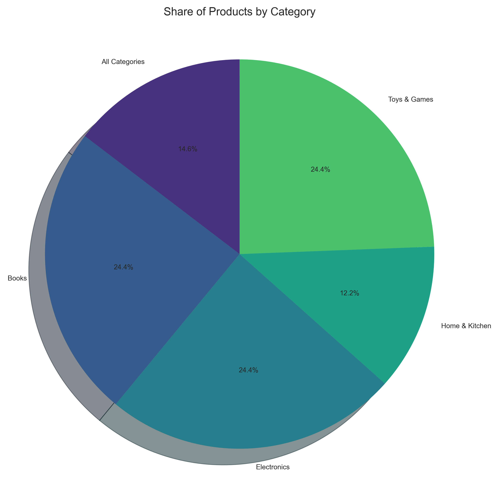
The price distribution across Amazon products reveals important insights about market positioning and consumer options:
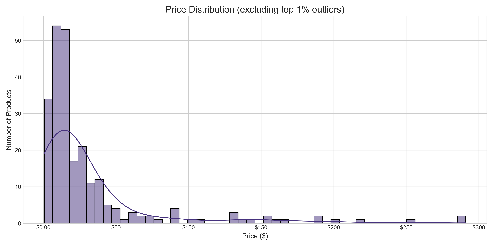
Significant price variations exist across different product categories:
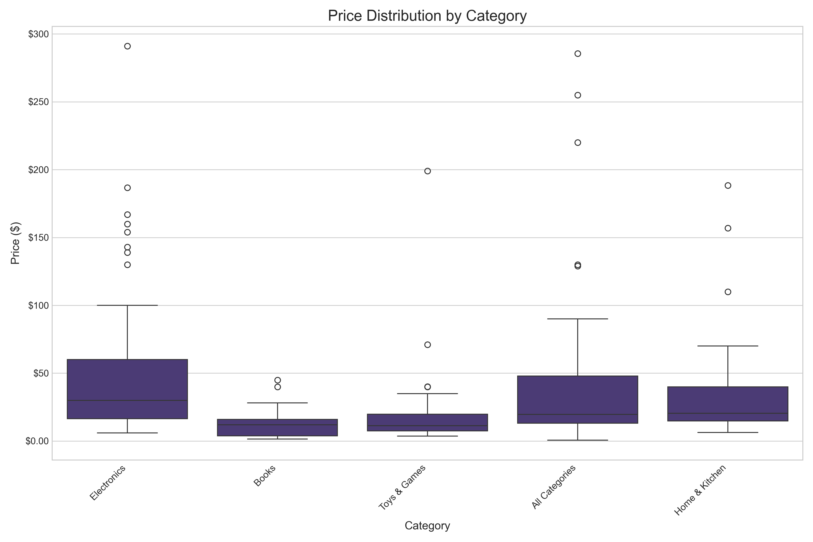
Customer ratings provide valuable insights into product quality and customer satisfaction:
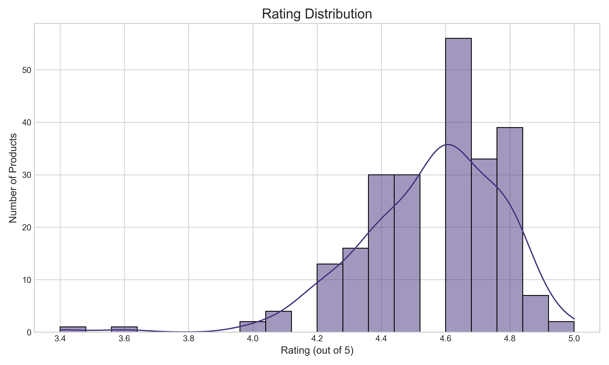
Categories demonstrate varying levels of customer satisfaction:
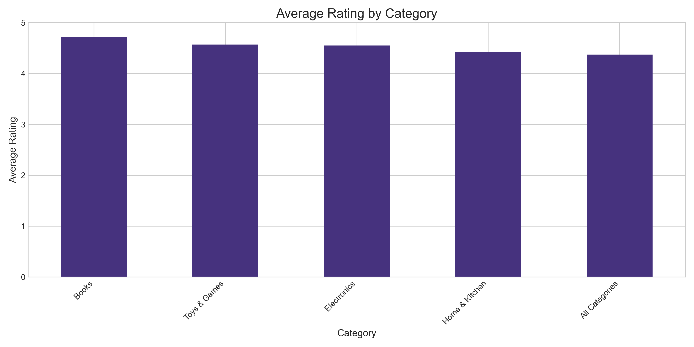
Amazon Prime status significantly influences product performance and visibility:
The percentage of Prime-eligible products varies substantially across categories:

Prime status also appears to impact pricing strategies:

Our clustering analysis identified distinct price segments in the Amazon marketplace:
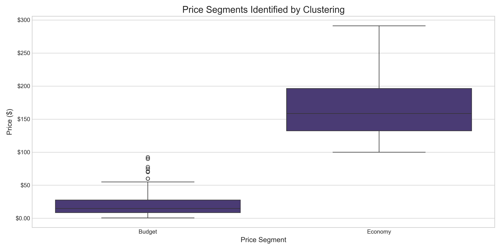
These segments represent different market positioning strategies and consumer price expectations.
We analyzed the relationship between price and product ratings to understand value perception:
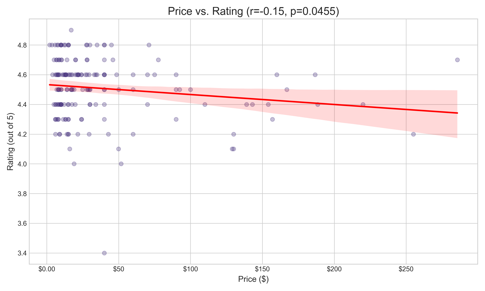
Similarly, we explored how price affects product popularity through review counts:
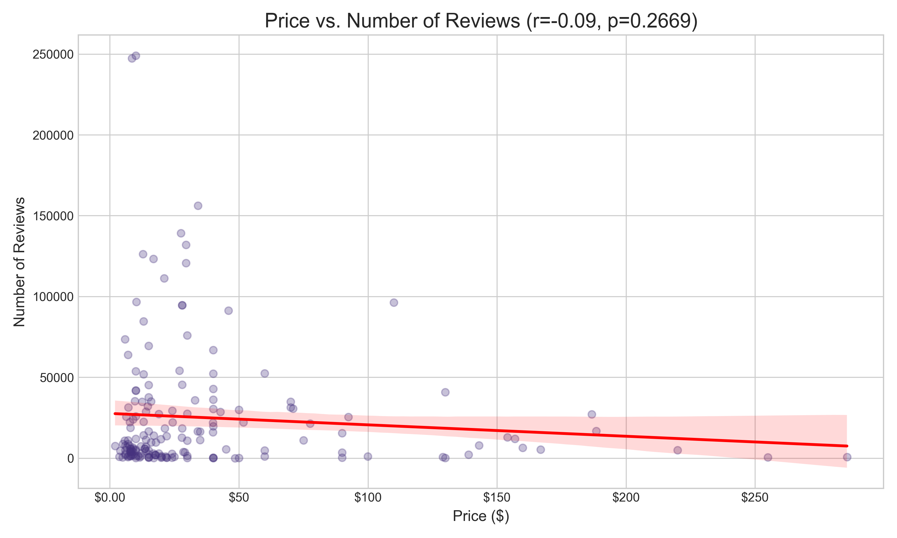
Analysis of market concentration reveals varying competitive landscapes across categories:
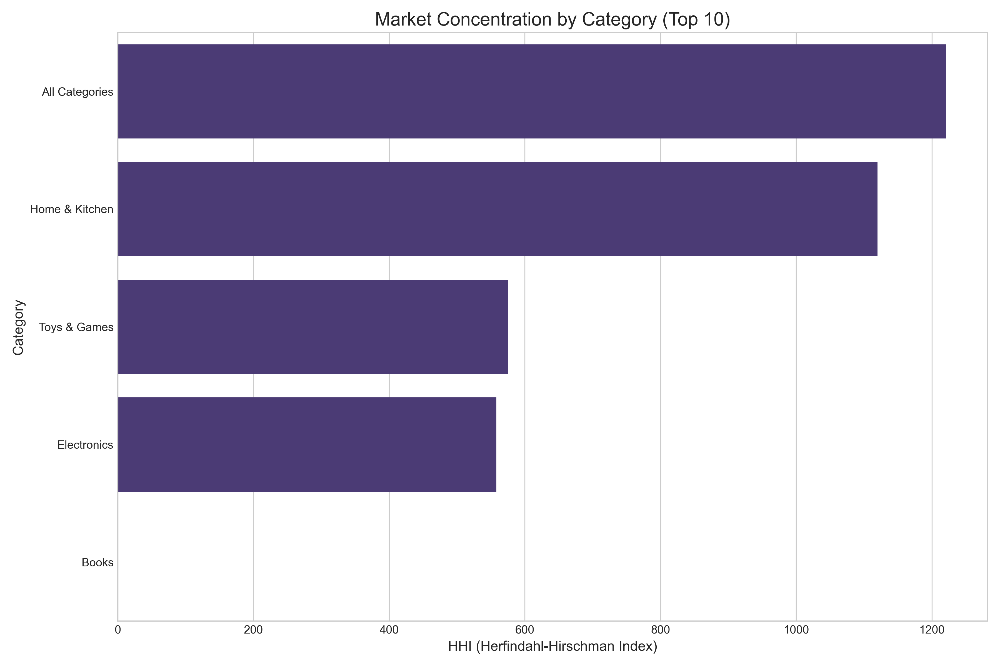
Categories with high concentration may present challenges for new entrants, while more fragmented categories offer greater opportunities.
Price variability within categories indicates different competitive dynamics:
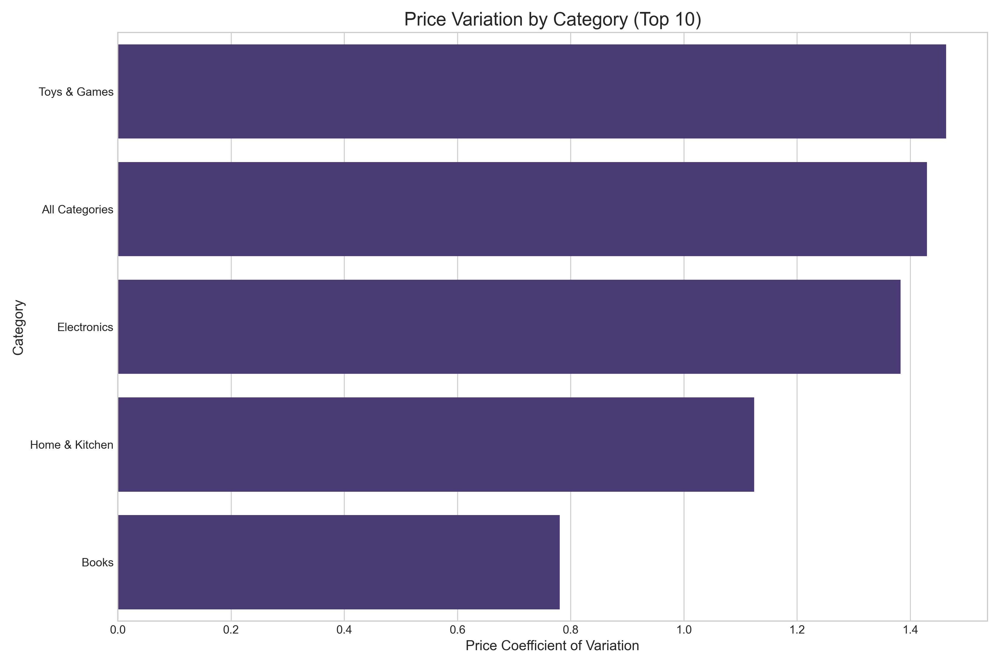
Higher variation suggests less standardized products or more differentiated pricing strategies.
Our elasticity analysis shows how price sensitivity varies across product categories:
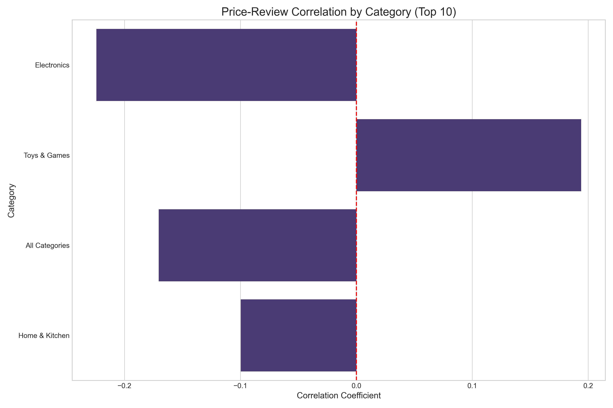
Categories with negative elasticity indicate that higher prices are associated with lower review counts (and potentially lower sales).
Develop clear value propositions for each price tier
Competitive Positioning:
Monitor price elasticity to optimize pricing for maximum revenue
Prime Program Optimization:
Consider product innovations addressing gaps in the current market
Quality Benchmarks:
Develop category-specific review response strategies
Value Communication:
Develop messaging frameworks tailored to each price segment
Competitive Positioning:
Develop segment-specific marketing messaging
Medium-term (3-6 months):
Refine competitive positioning across categories
Long-term (6-12 months):
This comprehensive analysis of Amazon's product landscape provides valuable insights into market dynamics, consumer preferences, and competitive positioning strategies. By examining bestsellers, trending products, and new releases across multiple categories, we've uncovered patterns that can guide strategic decision-making.
The findings reveal significant variations in pricing strategies, customer engagement, and competitive dynamics across different product categories. The identification of distinct price segments and the analysis of price-quality relationships provide a foundation for targeted market approaches.
Key takeaways include:
Market Segmentation: The Amazon marketplace comprises distinct price segments, each with different customer expectations and competitive dynamics.
Category Differences: Product categories vary substantially in terms of pricing strategies, rating patterns, and competitive concentration.
Prime Impact: Amazon Prime status significantly influences product positioning and performance, with varying effects across categories.
Price-Quality Relationship: The relationship between price and product ratings varies by category, offering insights into value perception.
By leveraging these insights, businesses can develop more effective pricing strategies, improve product positioning, and identify new market opportunities. The recommendations outlined in this report provide actionable steps for optimizing performance in the Amazon marketplace.
Continuous monitoring and refinement of these strategies will be essential as market conditions evolve. This analysis provides a solid foundation for data-driven decision-making in the dynamic e-commerce landscape.